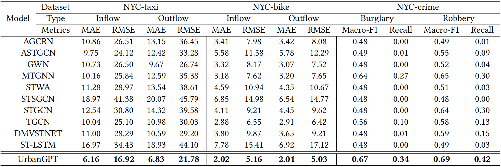
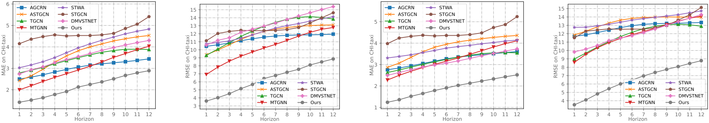
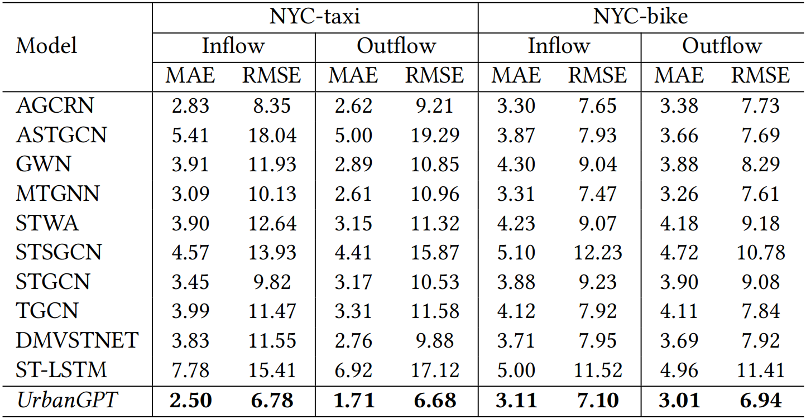
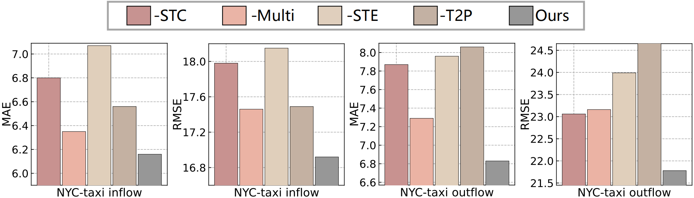

Spatio-temporal prediction aims to forecast and gain insights into the ever-changing dynamics of urban environments across both time and space. Its purpose is to anticipate future patterns, trends, and events in diverse facets of urban life, including transportation, population movement, and crime rates. Although numerous efforts have been dedicated to developing neural network techniques for accurate predictions on spatio-temporal data, it is important to note that many of these methods heavily depend on having sufficient labeled data to generate precise spatio-temporal representations. Unfortunately, the issue of data scarcity is pervasive in practical urban sensing scenarios. In certain cases, it becomes challenging to collect any labeled data from downstream scenarios, intensifying the problem further. Consequently, it becomes necessary to build a spatio-temporal model that can exhibit strong generalization capabilities across diverse spatio-temporal learning scenarios. Taking inspiration from the remarkable achievements of large language models (LLMs), our objective is to create a spatio-temporal LLM that can exhibit exceptional generalization capabilities across a wide range of downstream urban tasks. To achieve this objective, we present the UrbanGPT, which seamlessly integrates a spatio-temporal dependency encoder with the instruction-tuning paradigm. This integration enables LLMs to comprehend the complex inter-dependencies across time and space, facilitating more comprehensive and accurate predictions under data scarcity. To validate the effectiveness of our approach, we conduct extensive experiments on various public datasets, covering different spatio-temporal prediction tasks. The results consistently demonstrate that our UrbanGPT, with its carefully designed architecture, consistently outperforms state-of-the-art baselines. These findings highlight the potential of building large language models for spatio-temporal learning, particularly in zero-shot scenarios where labeled data is scarce.
Figure 1: The overall architecture of the proposed spatio-temporal language model UrbanGPT.
Figure 2: Illustration of spatio-temporal prompt instructions encoding the time- and location-aware information.
In this section, we thoroughly evaluate the predictive performance of our proposed model in zero-shot scenarios. Our objective is to assess the model's effectiveness in predicting spatio-temporal patterns in geographical areas that it has not encountered during training. This evaluation encompasses both cross-region and cross-city settings, allowing us to gain insights into the model's generalization capabilities across different locations.
Cross-region scenarios entail using data from certain regions within a city to forecast future conditions in other regions that have not been encountered by the model. The results highlight the exceptional performance of our proposed model in both regression and classification tasks on various datasets, surpassing the baseline models in zero-shot prediction.
Figure 3: Our model’s performance in zero-shot prediction is evaluated on three diverse datasets: NYC-taxi, NYC-bike, and NYC-crime, providing a comprehensive assessment of its predictive capabilities in unseen situations.
To assess the performance of our model in cross-city prediction tasks, we conducted tests on the CHI-taxi dataset, which was not seen during the training phase.
Figure 4: Time step-based prediction comparison experiment conducted on the CHI-taxi dataset.
This section examines the predictive capabilities of our UrbanGPT in end-to-end supervised prediction scenarios, as presented in Figure 5.
Figure 5: Evaluation of performance in the end-to-end supervised setting on the NYC-taxi and NYC-bike datasets.
This section investigates the impact of different key components on the performance of our model, as illustrated in Figure 6. Our rigorous testing primarily revolves around the zero-shot scenario using the NYC-taxi dataset.
Figure 6: Ablation study of our proposed UrbanGPT.
In this section, we focus on evaluating the robustness of our UrbanGPT across different spatio-temporal pattern scenarios. We categorize regions based on the magnitude of numerical variations, such as taxi flow, during a specific time period. Lower variance indicates stable temporal patterns, while higher variance suggests diverse spatio-temporal patterns in active commercial zones or densely populated areas.
Figure 7: Robustness study of the UrbanGPT model.